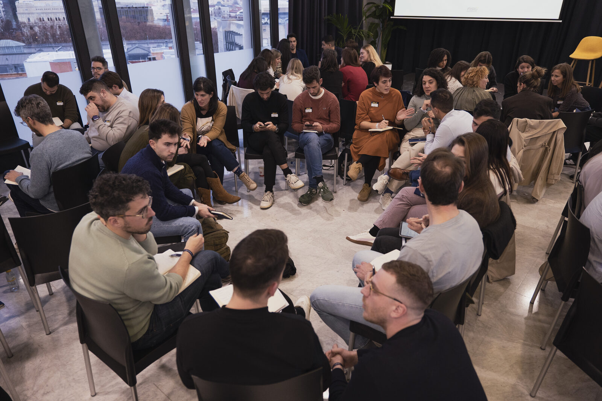
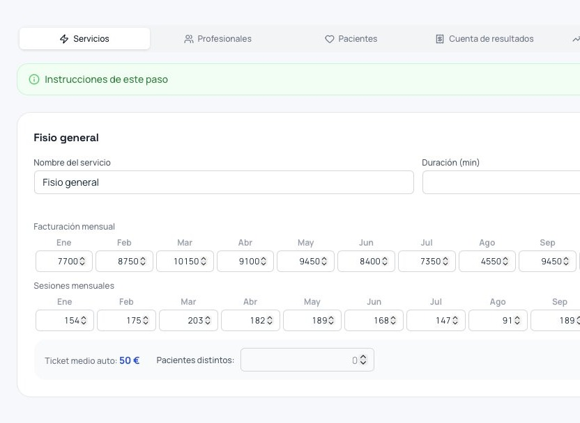
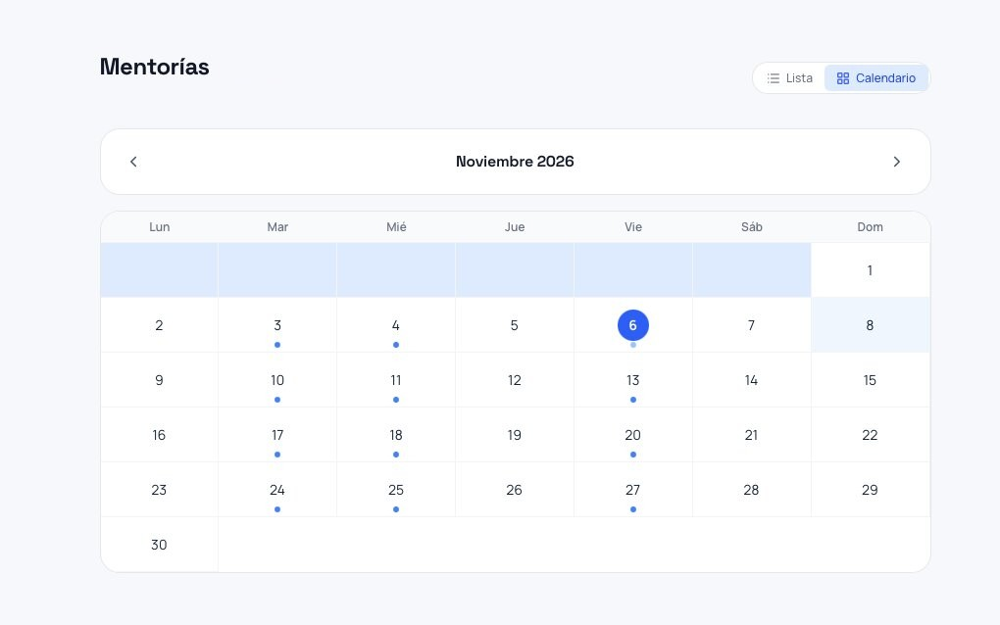
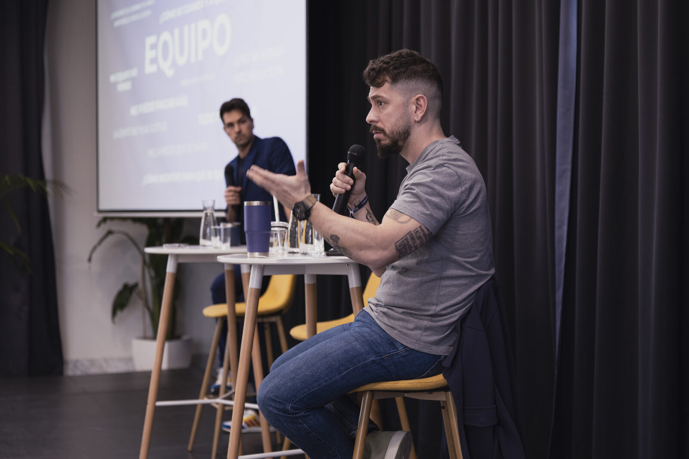
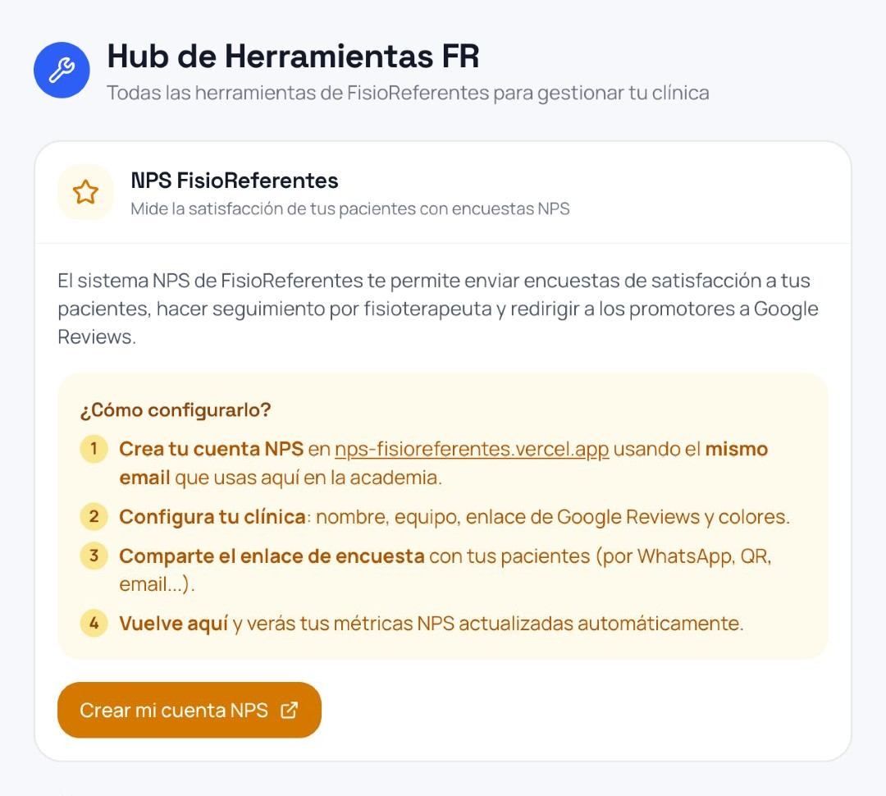
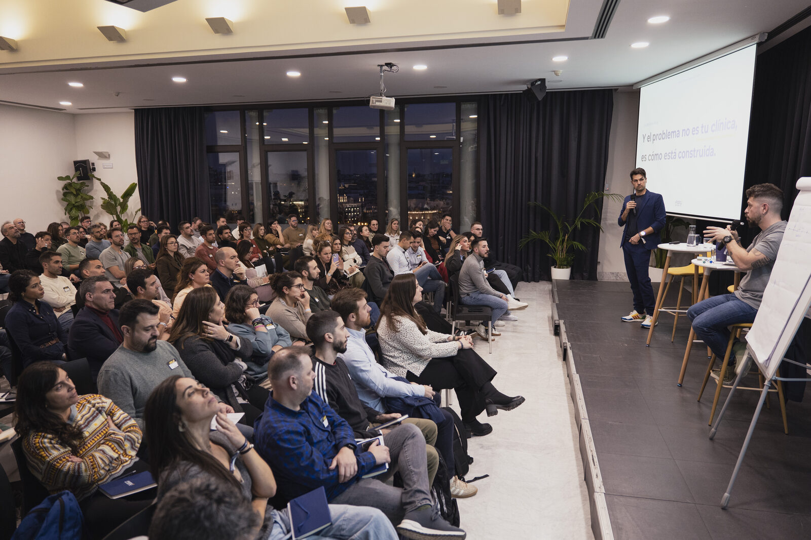
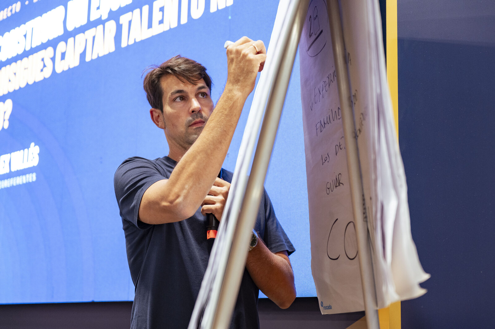
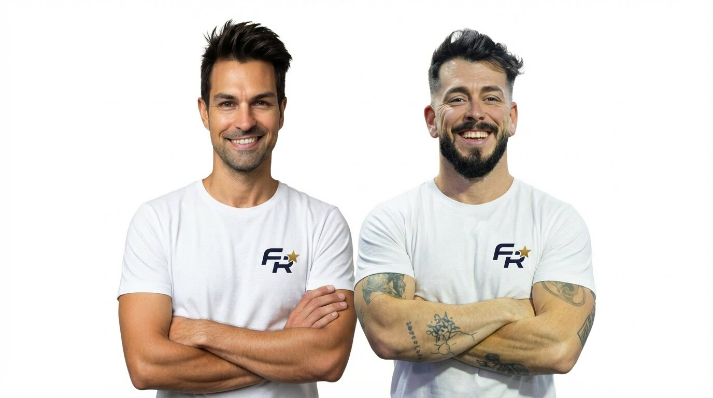

Todo lo que consigues.
No es un curso más. Es un entorno que te hace crecer. Todo gira alrededor de un método de tres fases, Validar, Optimizar y Escalar, para que sepas en cuál está tu clínica y qué te toca hacer ahora.
No vendemos información. Te metemos en el entorno.
Te acabas convirtiendo en la media de las personas con las que te rodeas. El Círculo es ponerte mi entorno a tu alcance.

En 14 días sabes en qué fase está tu clínica.
Te dice dónde estás y qué te toca ahora. Dejas de ir a ciegas desde el día uno.
Tus números, claros. Sin ser economista.
Tu rentabilidad real, tu ticket medio y lo que te deja cada fisio, con la herramienta de control de FR. Antes del día 14 sales con tu margen por sesión escrito.


Cada mes. En directo. Con tu caso sobre la mesa.
Pones tu caso, con tus números, delante de Álex y Jano y de otros dueños de clínica que ya pasaron por ahí. Sales con la decisión tomada y el siguiente paso claro, no con una idea más.
Los viernes, a las 12:00. Dos horas que te recolocan.
Tres viernes al mes, dos horas en directo. Uno con Álex y Jano. Otro con un experto invitado que ya lo ha hecho. Y el Espacio Neurona, para hablar en comunidad de lo que te está pasando esa semana.


Cientos de dueños de clínica. A un mensaje de distancia.
Un chat y un directorio con cientos de fisios que ya tienen su clínica, segmentados por ciudad, especialidad y fase. Busca a quien tiene tu mismo problema en tu ciudad, o a quien lo resolvió hace dos años, y escríbele. No es un grupo de gente perdida: es donde ya está la gente que lo ha hecho.
Esto lo han dicho fisios que entraron con nosotros este octubre.
«Que mi clínica funcione sin que esté allí todo el día, y pueda irme de vacaciones.»
25 años de clínica«Cuanto más me meto en la gestión, más veo que no tengo control de nada.»
17 años, equipo de diez«Lo complejo no es fidelizar al paciente. Es fidelizar al personal.»
Clínica con equipo«Que mi negocio no dependa de mí. Pero para eso tengo que entenderlo antes.»
Alumno de ACTIVANinguno dice «necesito más pacientes». Casi todos tienen la agenda llena. Ese es el punto.
Dos alumnos que miraron sus números. Y cambiaron su clínica.
Cuarenta horas de camilla, agenda llena, 1.800 € al mes. Siete euros de margen por servicio.
«Cada año me gastaba miles de euros en formación de fisioterapia y cero en gestión.»
Menos pacientes. Más dinero.
«Era un autoempleo que me ahogaba.»
Fer y Deisy hicieron nuestro programa de acompañamiento, no El Círculo. A los dos les cambió la vida el mismo primer paso: mirar sus números con alguien que ya había hecho el camino. Ese paso es el que das aquí.
Tres fases. Una pregunta.
Toda clínica pasa por las mismas tres. Casi nadie sabe en cuál está. Y no puedes pasar a la siguiente sin resolver la anterior: si te la saltas, no avanzas más rápido, avanzas hacia un problema más caro.
Un servicio que tu paciente recomienda, al precio adecuado.
Quiere publicidad con un servicio sin margen. No es captación. Es validar.
La estructura para que otros lo hagan por ti y lo hagan bien.
Nadie del equipo lo hace como ella y nunca lo puso por escrito. No es equipo. Es estandarizar.
Cuando la entrega ya no depende de ti, y solo entonces, invertir en crecer.
Mete más horas para ganar más. Es precio.
El criterio no se aprende viendo vídeos. Se coge de la gente que ya lo tiene.
Todo lo que entra.
Cada pieza resuelve un obstáculo concreto. No es una lista de contenidos.
Sabes en qué fase está tu clínica y qué te toca ahora.
Tu rentabilidad real, tu ticket medio y lo que te deja cada fisio, con la herramienta de FR.
Cada mes, en directo, con Álex y Jano y tu caso sobre la mesa. Sales con la decisión tomada.
Tres viernes al mes, dos horas en directo: uno con Álex y Jano, otro con un experto invitado y el Espacio Neurona para hablar en comunidad.

Lo útil para tu negocio, en formato corto: marca personal, atención al cliente, gestión de equipo, liderazgo.

Chat y directorio con cientos de dueños de clínica, por ciudad, especialidad y fase. Encuentra a quien ya resolvió lo que tú tienes delante.

Porque verse en pantalla y conocerse son dos cosas.

Álex o Jano mira tu caso concreto y te dice por dónde empezar. Cuando se acaben las 50, no vuelve.
Tus primeros 30 días.
En 14 días sabes en qué fase está tu clínica y cuánto te deja cada sesión. A partir de ahí, ninguna decisión de precio, equipo o servicio la tomas solo.
Quiero entrar en El CírculoLo que no te voy a pedir.
Casi todo lo que necesitas para desatascar tu clínica ya lo tienes dentro. Lo que falta no son recursos. Es enfoque.
Los 50 primeros tienen una sesión 1:1 con Álex o Jano.
Álex o Jano mira tu caso y te dice por dónde empezar. No es una cifra de marketing: esas sesiones las hacemos nosotros y en nuestra agenda no caben más. Cuando se acaben, El Círculo sigue. La sesión, no.
Quiero una de las 50Un año entero. Membresía anual.
Ahora mismo estás perdiendo más de 40 € al día por tener los precios mal puestos. El dinero ya lo estás pagando. Lo pagas por no saber, y no te lo devuelve nadie.
Si durante tu año en El Círculo das el salto a ACTIVA, los 490 € se te descuentan íntegros del precio del programa.
Preguntas antes de entrar.
¿Y si no tengo equipo todavía?
El Círculo es justo para antes de tener equipo o estar a punto de contratar. Lo primero que haces es saber en qué fase estás y si contratar es tu siguiente paso o no.
¿Y si llevo veinte años con la clínica?
Mejor. La mayoría de la gente que mejores decisiones toma dentro lleva más de quince años. El tiempo no sobra; lo que falta es contrastar con alguien.
¿Cuánto tiempo me va a pedir?
Unas dos horas al mes en directo. El resto, cuando quieras: todo queda grabado y es online, a tu ritmo, sin compromiso de avance.
¿Tengo que dejar de pasar consulta?
No. Si tratar es lo que te gusta, sigue tratando. Esto va de entender y controlar tu negocio, no de dejar la camilla.
¿En qué se diferencia de ACTIVA?
El Círculo es el entorno: mensual, a tu ritmo, para dejar de decidir solo. ACTIVA es el programa: cuatro meses de la mano, cada semana, para implantarlo del todo. Si durante tu año en El Círculo das el salto a ACTIVA, los 490 € se descuentan.
¿Qué pasa cuando acaba el año?
Renuevas si quieres seguir. Es una membresía anual, sin permanencia: si no renuevas, no pasa nada.
¿Se puede pagar a plazos?
Es pago único anual, 490 € + IVA, unos 40 € al mes. Es gasto deducible de tu negocio.
¿Me hacéis factura?
Sí, factura automática con tus datos fiscales al comprar.
Hasta aquí llego yo.
Las decisiones importantes nunca te pillan bien. Y cuando miras atrás, lo que agradeces no es haber esperado al momento perfecto. Yo no te pido que quieras una clínica más grande. Te pido que quieras un buen negocio de fisioterapia, uno que no dependa de ti. Si entras, nos vemos dentro: en el Consejo, todos los meses, con un año por delante.
Álex Vallés